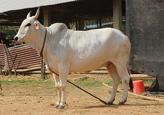

GANGATIRI
Weight:
770 to 990 pounds
Height :
43 inches to 51 inches
Length:
5 to 6 feet
Color:
solid coat color that varies between shades of brown, ranging from light tan to dark chocolate brown
Longevity:
10 – 15 years.
Gangatiri personality
Adaptability: Gangatiri cows are well-adapted to the hot and humid climate of the Gangetic plains. They have developed resilience to the environmental challenges of the region, including high temperatures and humidity.
Maternal Instincts: Like many other cattle breeds, Gangatiri cows exhibit strong maternal instincts. They are attentive mothers and take good care of their calves, ensuring their well-being and protection within the herd.
What to expect
1.Adaptability: Gangatiri cows are well-adapted to the hot and humid climate of the Gangetic Plains. They are known for their ability to withstand high temperatures and humid conditions, making them suitable for the region's agricultural practices.
2.Workability: Historically, Gangatiri cows have been valued for their draught power. They are often used for plowing fields, pulling carts, and other agricultural activities. They are known for their strength, endurance, and willingness to work.
3.Milk Production: While Gangatiri cows are primarily used for draught purposes, they also produce milk. However, their milk production levels are typically moderate compared to specialized dairy breeds. Nevertheless, they provide a valuable source of milk for local communities.
4.Hardiness: Gangatiri cows are known for their hardiness and resilience. They are able to thrive on low-quality forage and have good disease resistance, which makes them relatively low-indextenance compared to some other breeds.
5.Temperament: Gangatiri cows generally have a docile temperament, making them easier to handle and work with. They are known for their calm disposition, which is beneficial for both draught work and dairy management.
History of the Gangatiri
Indigenous Origins: Gangatiri cows are considered indigenous to the Indian subcontinent, with their origins traced back to ancient times. They are part of the broader group of indigenous Indian cattle breeds, which have adapted to various environmental conditions and cultural practices over centuries.
Traditional Importance: Historically, Gangatiri cows have been highly valued by local communities for their contribution to agriculture and dairy farming. They have been integral to the agrarian economy of the region, providing milk, draft power, and dung for fuel and fertilizer.
Physical Characteristics: Gangatiri cows typically exhibit characteristics common to indigenous Indian cattle breeds. They have a sturdy build, adapted to the local climate and terrain. Their coat color can vary, but they often have a predominantly white or light-colored coat.
Cultural Significance: In addition to their economic importance, Gangatiri cows hold cultural and religious significance in Indian society. Cattle, including Gangatiri cows, are revered in Hinduism and are associated with various deities and religious rituals. As a result, they are often treated with care and respect by local communities.